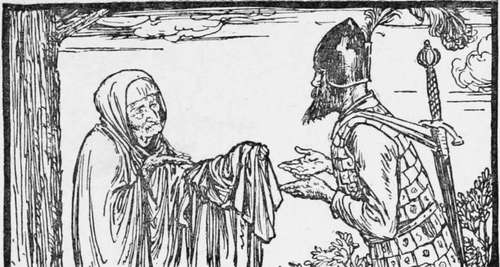

The Dancing Shoes
Description
This section is from the book "Household Tales by Brothers Grimm", by Brothers Grimm. Also available from Amazon: Household Tales by Brothers Grimm.
The Dancing Shoes
Over the seas and far away there is a fine country that neither you nor I, nor anybody else that we know, ever saw; but a very great king once reigned there who had no son at all, but had twelve most beautiful daughters. Now this king had no queen to help him to take care of all these twelve young ladies; and so you may well think that they gave him no little trouble. They slept in twelve beds, all in a row, in one room: and when they went to bed the king always went up, and shut and locked the door. But, for all this care that was taken of them, their shoes were every morning found to be quite worn through, as if they had been danced in all night; and yet nobody could find out how it happened, or where they could have been.
Then the king, you may be sure, was very angry at having to buy so many new shoes; and he made it known to all the land, that if anybody could find out where it was that the princesses danced in the night, he should have the one he liked best of the whole twelve for his wife, and should be king after his death; but that whoever tried, and could not, after three days and nights, make out the truth, should be put to death.
A king's son soon came. He was well lodged and fed, and in the evening was taken to the chamber next to the one where the princesses lay in their twelve beds. There he was to sit and watch where they went to dance; and in order that nothing might pass without his hearing it, the door of his chamber was left open. But the prince soon fell asleep; and when he awoke in the morning, he found that the princesses had all been dancing, for the soles of their shoes were full of holes. The same thing happened the second and third nights: so the king soon had this young gentleman's head cut off.
After him came many others; but they had all the same luck, and lost their lives in the same way.
Now it chanced that an old soldier, who had been wounded in battle, and could fight no longer, passed through this country; and as he was travelling through a wood, he met a little old woman, who asked him where he was going. "I hardly know where I am going, or what I had better do," said the soldier; "but I think I should like very well to find out where it is that these princesses dance, about whom people talk so much; and then I might have a wife, and in time I might be a king, which would be a mighty pleasant sort of a thing for me in my old days." " Well, well," said the old dame, nodding her head, " that is no very hard task: only take care not to drink the wine that one of the princesses will bring to you in the evening; and as soon as she leaves you, you must seem to fall fast asleep."
Then she gave him a cloak, and said, " As soon as you put that on you will become invisible ; and you will then be able to follow the princesses wherever they go, without their being at all aware of it." When the soldier heard this he thought he would try his luck: so he went to the king, and said he was willing to undertake the task.
He was as well lodged as the others had been, and the king ordered fine royal robes to be given him; and when the evening came, he was led to the outer chamber. Just as he was going to lie down, the eldest of the princesses brought him a cup of wine; but the soldier slily threw it all away, taking care not to drink a drop. Then he laid himself down on his bed, and in a little while began to snore very loud, as if he was fast asleep. When the twelve princesses heard this they all laughed heartily; and the eldest said, " This fellow, too, might have done a wiser thing than lose his life in this way!" Then they rose up and opened their drawers and boxes, and took out all their fine clothes, and dressed themselves at the glass; and put on the twelve pair of new shoes that the king had just bought them, and skipped about as if they were eager to begin dancing. But the youngest said, "I don't know how it is, but though you are so happy, I feel very uneasy; I am sure some mischance will befall us." "You simpleton!" said the eldest, "you are always afraid; have you forgotten how many kings' sons have already watched us in vain ? As for this soldier, he had one eye shut already, when he came into the room; and even if I had not given him his sleeping draught he would have slept soundly enough."
When they were all ready, they went and looked at the soldier; but he snored on, and did not stir hand or foot: so they thought they were quite safe; and the eldest went up to her own bed, and clapped her hands, and the bed sank into the floor, and a trap door flew open. The soldier saw them going down through the trap-door, one after another, the eldest leading the way; and thinking he had no time to lose, he jumped up, put on the cloak which the old fairy had given him, and followed them. In the middle of the stairs he trod on the gown of the youngest, and she cried out, "All is not right; some one took hold of my gown." "You silly thing!" said the eldest; "it was nothing but a nail in the wall."
Then down they all went, and then ran along a dark walk, till they came to a door; and there they found themselves in a most delightful grove of trees; and the leaves were all of silver, and glittered and sparkled beautifully. The soldier wished to take away some token of the place; so he broke off a little branch, and there came a loud noise from the tree. Then the youngest daughter said again, " I am sure all is not right: did not you hear that noise? That never happened before." But the eldest said, "It is only the princes, who are shouting for joy at our approach."
They soon came to another grove of trees, where all the leaves were of gold; and afterwards to a third, where the leaves were all glittering diamonds. And the soldier broke a branch from each; and every time there came a loud noise, that made the youngest sister shiver with fear: but the eldest still said, it was only the princes, who were shouting for joy. So they went on till they came to a great lake; and at the side of the lake there lay twelve little boats, with twelve handsome princes in them, waiting for the princesses.
One of the princesses went into each boat, and as the boats were very small the soldier hardly knew what to do. " My company will not be very agreeable to any of them," said he; "but, however, I must not be left behind": so he stepped into the same boat with the youngest. As they were rowing over the lake, the prince who was in the boat with the youngest princess and the soldier said, " I do not know how it is, but, though I am rowing with all my might, we get on very slowly, and I am quite tired: the boat seems very heavy to-day, especially at one end." " It is only the heat of the weather," said the princess; "I feel it very warm, too."
On the other side of the lake stood a fine illuminated castle, from which came the merry music of horns and trumpets. There they all landed, and went into the castle, and each prince danced with his princess; and the soldier, who was all the time invisible, danced with them too; and when any of the princesses had a cup of wine set by her, he drank it all up, so that when she put the cup to her mouth it was empty. At this, too, the youngest sister was sadly frightened; but the eldest always stopped her mouth. They danced on till three o'clock in the morning, and then all their shoes were worn out, so that they were forced to leave off. The princes rowed them back again over the lake ; but this time the soldier sat himself in the boat by the eldest princess, and her friend too found it very hard work to row that night. On the other shore they all took leave, saying they would come again the next night.
When they came to the stairs, the soldier ran on before the princesses, and laid himself down; and as they came up slowly, panting for breath and very much tired, they heard him snoring in his bed, and said, "Now all is quite safe." Then they undressed themselves? Put away their fine clothes, pulled off their shoes, and went to bed, and to sleep.
In the morning the soldier said nothing about what had happened, for he wished to see more of this sport. So he went again the second and third nights, and every thing happened just as before, the princesses dancing each time till their shoes were worn to pieces, and then gomg home tired; but the third night the soldier carried away one of the golden cups, as a token of where he had been.
On the morning of the fourth day he was ordered to appear before the king; so he took with him the three branches and the golden cup. The twelve princesses stood listening behind the door, to hear what he would say, laughing within themselves to think how cleverly they had taken him in, as well as all the rest who watched them. Then the king asked him, " Where do my twelve daughters dance at night?" and the soldier said, "With twelve princes in a castle under ground." So he told the king all that had happened, and showed him the three branches and the golden cup, that he had brought with him. On this the king called for the princesses, and asked them whether what the soldier said was true or not ; and when they saw they were found out, and that lt was of no use to deny what had happened, they said it was all true.
Then the king asked the soldier which of them he would choose for his wife: and he said, " I am not very young, so I think I had better take the eldest." And they were married that very day, and the soldier in due time was heir to the kingdom, after the king his father-in-law died; but what became of the other eleven princesses, or of the twelve princes, I never heard.
Continue to:
Tags
fairy tales, children's stories, brothers grimm, household tales